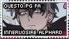
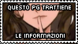
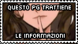

Character
Body
Alto quasi due metri • Magro con i suoi 88 chili di peso •
Lunghi Corti capelli corvini, dalle spiccate ciocche bianche •
Occhi ametista con sfumature verdi, visibili occhiaie • Viso
inespressivo • Veste in modo curato • Mani sempre coperte da
guanti • Braccio sinistro assente da prima del gomito, sostituto con una
protesi costruita da Jules • Pelle olivastra, costantemente fredda,
mutata dalla sua stessa alchimia • Corpo coperto di cicatrici • Tatuaggio di
Gilda sulla spalla sinistra, sopra i resti di un'orribile ustione •
Emette spesso fumo, che nasconde tramite una pipa • Non ha più il
cuore, sostituito dalla Lacryma del Dragon Slayer
Mind
Distratto • Curioso • Freddo • Indifferente •
Ossessivo in maniera maniacale • Logico • Inquisitivo • Poca memoria •
Dissociato, incapace di processare correttamente le proprie emozioni • Usa
sempre il "voi", non per educazione • Vendicativo • Eccessivamente
serio • Incapace di comprendere il sarcasmo • Insensibile e anaffettivo •
Diffidente e bugiardo • A malapena ricorda i suoi anni prima dell'arrivo a
Fiore, rinchiusi dietro il trauma della costante fuga • Carenza di sonno •
Dipendente dal caffè e dalla caffeina, che consuma in quantità
smodata • Drammatico, non manca di inserire riferimenti e citazioni •
Bramoso di potere • Insofferente all'incompetenza, sua e altrui •
Indipendente, al limite dell'estremo
Funfacts
Appassionato di fotografia, che pratica ormai da diversi anni •
Poliglotta, parla il: Desertiano, Comune, Seveniano • Il Seveniano lo ha
imparato grazie ad una passione per vecchie opere e lacryfilm • Sta
imparando il Minstrel dopo che questa mancanza ha reso una missione più
complessa • Disprezza qualsiasi tipo di cibo zuccherato •
Mancino Forzatamente ambidestro • Tende ad annotare tutto:
incontri, luoghi, eventi, pensieri, in un pratico diario
History
Forgotten
Nasce a Desierto il 28 Gennaio 774 come جلين فاريس - Glyn Varis • Figlio di
mercanti e nomadi • Infanzia passata a vagare tra Desierto e Joya •
Ottiene la sua prima rudimentale macchina fotografica nel 782 • Grazie ai
numerosi viaggi e merci ottiene una più avanzata Radpix P1 nel 786 •
L'anno dopo, nel 787 la carovana viene attaccata • La famiglia e membri della
carovana non sopravvivono allo scontro • Insieme agli altri bambini
viene catturato e portato via per essere messo in commercio come schiavo • La
spalla sinistra fu marchiata a dimostrare il nuovo stato • Si e' mostrato
immediatamente ribelle, con disobbidienza e tentativi di fuga fallimentari •
Ribellioni che venivano spente in lunghe punizioni corporali, di cui porta
ancora i segni • Punizione che sono proseguite per anni • Acquistato insieme a molti
altri nel 791 • Durante lo spostamento verso i nuovi padroni vengono
attaccati da dei banditi • Riesce a scappare nella confusione • Nella
notte ha provato a cancellare il marchio da schiavo con un tizzone ardente,
lasciando al suo posto una bruciatura che ricopre l'intera spalla • Lì ha assunto il
nome di الفرد - Alphard, a rappresentare il proprio terrore e solitudine • Ha
vagato per Joya e Stella, vivendo di piccoli furti e elemosina • Nel 794 viene
rintracciato da Andromeda insieme ad altre vittime dei trafficanti • Decide
di non essere coinvolto • Imboscandosi in un trasporto di merci, ha raggiunto Fiore
nel 795 • Ha trovato rifugio ad Oak • Rimane nascosto ad Oak fino a risveglio della
magia, che si rivela essere quella del ghiaccio, iniziandola a studiare
ossessivamente.
Written
Riprende a vagare per Fiore nell'estate del 798 • Si immischia nel furto dei
Libri a Sylph Labyrinth, prima di abbandonare l'investigazione • Viene
coinvolto nelle apparizioni degli Incubi per il regno • Avventura che lo
ufficializza come detective insieme a Nysika • Scopre della fuga di
OmniMan, e parte per la spedizione nelle fogne.
Ne uscirà senza un braccio • Aiuta degli artisti a Kunugi, ottenendo anche
udienza con il sindaco a cui offre un'ingente somma in cambio del suo supporto e di
un locale nel Barrio • Sostiusce l'arto perso con una protesi costruita da
Jules • Attira l'attenzione dei vigilanti e diventa un Crime Sorciére,
sventando i piani di una tratta schiavista a Fiore • Combatte contro Lyn e
Az0th, nella prima apparizione del Corvo • Partecipa alla battaglia
contro OmniMan sempre come Corvo, congelando la Fortezza sotto gli effetti
del potere del ricercato • Insieme agli altri presenti riusciranno a sconfiggerlo •
Diventa Freelancer del Sorcerer Magazine • Assiste alla
fuga dei manichini a Kunugi • Insieme a Danmel e il suo gruppo di
ricerca si dedica a scoprire tutto su Lloyd • Per colpa dei Lamia Scale
diventa un letterale corvo per una lunga settimana • Presenzia come Corvo al
richiamo di Wonder Jay-X alla Onibus Station, dove cattura un manichino da
portare a Vicky • Aiuta Koichi ad indagare e cercare informazioni sul
Corvo di Crime Sorciére Le ricerche con Danmel su Lloyd rivelano come
l'ultimo libro parli di Zeref • Insieme a Jughead e Siegrid il
Corvo uccide Mun, uno degli inventori dei manichini • Combatte contro il
cadavere della Balena Joey riportato alla vita da Lil'Mama • La gilda
di Crime inizia la ricerca del fantomatico Ordine Fantasma • Nel frattempo
riprende le indagini legate alla tratta di schiavi ritrovata al suo ingresso
in gilda • Si farà aiutare da Katniss, Nysika, Lee e Siegrid • A termine di
queste indagini ottiene la Lacryma di Abel, cui ricordo risiede nella protesi
• L'Ordine Fantasma fa la sua mossa e attacca la sede Crime • Dopo un duro
scontro, darà il colpo finale al leader Sawyer Hollow • Perde la spada nello
scontro, e tiene ancora l'impugnatura come ricordo • Iniziano le spedizioni nel
Dulixar • Attraversa il portale di Crocus in cerca di tracce di
Lloyd • Prima del capodanno dell'800 il Gran Generale Runico viene
assassinato • Grazie ad indagini dei vigilanti, si scopre il mandante essere lo
Shogun Tarik • Con Heclpetia e Violate va per eliminare Tarik,
che sta cercando di fuggire da Harujion • In quello scontro diventa il
Dragon Slayer dei Veleni • Nel Dulixar affronta una delle evocazioni della
Santa della Morte nella missione per il salvataggio di Lloyd • ...
Meetings
By my side, still
Katniss, إميفال فردانت · for I can't understand those
feelings, but I still desire to treasure them | Nysika · more than
comrades, friend | Siegrid · from you I learned how to not leave
comrades behind | Danmel · may the mask rest lightly on you |
Lee · nowadays is more than transactional |
Tiaolu, Gioia, Naito · can't help but despise how this genuine bond
affects me | Melinoe · not for sweets or tea, but the drama |
Tsukiko · somewhat, I feel responsible for your growth |
Heclpetia · looking forward to the next update
Fleeting passage
Adam, Akemi, Anne, Artemisia, Asher, Chronos, Cosme, Dahlia, Delaila, Dike,
Dreyfius, Drystan, Eder, Eight, Eiko, Eluned, Enkai, Eve, Evie, Hecate, Hina, Isamu,
Jakob, Joseff, Jughead, Jules, Kia, Koichi, Kryon, Lorex, Lynn, Melinoe, Mia,
Miranda, Moe, Monet, Myra, Nadya, Namine, Otto, Outis, Ravy, Ray, Regina, Rui,
Saber, Serafeim, Shireen, Siegvar, Soze, Susanoo, Violate, Wolfgang, Xiaolong,
Yachiru, Yoshihiro, Yosuke, Yousuke, Zark
Off
Che dire se non le solite cose:
- - Io sono il mio pg;
- - Mordo;
- - Gioco con tutti, belli e brutti;
- - La vita è dura e difficile e spero di trovare il tempo;
- - Meglio sotto prenotazione;
Insomma, battute a parte. Se mi scrivete mi fa sempre piacere. Proverò a
contattare anche io, ma spesso le disponibilita'sono quello che sono insomma.
In caso liberissimi di scrivermi su discord (the_skybreaker) o su Telegram
(@Skybreaker). A prova di bomba.
Come fato sono SEMPRE disponibile per qualsiasi cosa. Che siano quest,
duelli, chiarimenti, domande, proposte e idee. Sono ancora alle prime armi
(anche quando non sarò più iniziato) e apprezzo sempre suggerimenti e critiche.
Non siate timidi!
Crediti della base del codice a
emmescodes
da cui ho rubato e rifatto
Crediti del codice della musica a Leanne, sono troppo pigro
Non penso ci sia altro da dire, ci si becca in game!
Ringrazio infinitamente tutti quelli che mi sopportano e aiutano per la grafica
e mi fanno betatest dei codici. Oltre che ringrazio tutte le persone che
dedicano anche solo un secondo a farmi lavori grafici di qualsiasi tipo!
Il pallino mente sempre.
Bannerini!

Awards 798!


 
